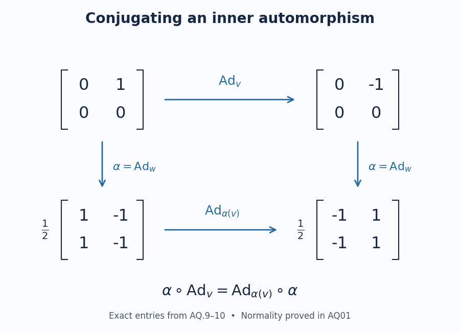

Inner and outer automorphisms
An automorphism changes the algebra's coordinates. Conjugation by a unitary already inside the algebra is an inner automorphism. We prove that such changes form a normal subgroup, so that automorphisms can be compared modulo inner changes. We then check the group operations in the u-topology, using the written standard-implementation theorem and positive decomposition of normal functionals.
The inner subgroup and the outer quotient
Let \(M\) be a von Neumann algebra. Write \(\operatorname{Aut}(M)\) for its normal unital star-automorphisms, with composition as multiplication, and \(\mathcal U(M)\) for its unitaries. For \(v\in\mathcal U(M)\), define \[ \operatorname{Ad}_v(a)=vav^*,\qquad a\in M. \tag{AQ.1} \] This is a unital multiplicative star map with inverse \(\operatorname{Ad}_{v^*}\). It is normal: conjugation and its inverse preserve order, so they take any least upper bound of a bounded increasing positive net to the least upper bound of the conjugate net. The same order argument proves that the inverse of a normal star-automorphism is normal, and composition preserves normality. Thus the stated automorphisms form a group.
Direct multiplication gives \[ \operatorname{Ad}_u\operatorname{Ad}_v =\operatorname{Ad}_{uv},\qquad (\operatorname{Ad}_v)^{-1}=\operatorname{Ad}_{v^*}. \tag{AQ.2} \] Consequently their image \(\operatorname{Int}(M)\) is a subgroup. The kernel of this unitary-to-automorphism map is exactly \(\mathcal U(Z(M))\): the identity \(vav^*=a\) for every \(a\) is equivalent, after multiplication on the right by \(v\), to \(va=av\) for every \(a\). Its kernel is therefore precisely the central unitaries. In particular two unitaries give the same inner automorphism exactly when their quotient is central.
For \(\alpha\in\operatorname{Aut}(M)\), the element \(\alpha(v)\) is unitary, since applying \(\alpha\) to the two unitary identities preserves them. For every \(a\in M\), multiplicativity and preservation of adjoints give \[ \begin{aligned} (\alpha\operatorname{Ad}_v\alpha^{-1})(a) &=\alpha(v)a\alpha(v)^*. \end{aligned} \tag{AQ.3} \] Hence conjugation by \(\alpha\) maps the inner subgroup into itself. Applying the same argument to \(\alpha^{-1}\) proves equality, so this subgroup is normal.
We can now form the outer automorphism group. Declare \(\alpha\sim\beta\) when \(\alpha=\operatorname{Ad}_u\beta\) for some unitary \(u\). The identity, inverse and product formulas (AQ.2) prove reflexivity, symmetry and transitivity. Define \[ \begin{gathered} \operatorname{Out}(M)=\operatorname{Aut}(M)/\operatorname{Int}(M),\\ [\alpha][\beta]=[\alpha\beta],\qquad [\alpha]^{-1}=[\alpha^{-1}]. \end{gathered} \tag{AQ.4} \] These operations are independent of representatives. Indeed, if the representatives are changed to \(\operatorname{Ad}_u\alpha\) and \(\operatorname{Ad}_v\beta\), then (AQ.3) gives \[ \begin{aligned} (\operatorname{Ad}_u\alpha)(\operatorname{Ad}_v\beta) &=\operatorname{Ad}_{u\alpha(v)}\alpha\beta,\\ (\operatorname{Ad}_u\alpha)^{-1} &=\operatorname{Ad}_{\alpha^{-1}(u^*)}\alpha^{-1}. \end{aligned} \tag{AQ.5} \] The changed products and inverses therefore have the same classes. Associativity, the identity class and the inverse identities pass directly from composition in \(\operatorname{Aut}(M)\). This constructs the quotient group without a closure assumption on the inner subgroup. The zero algebra has a singleton automorphism group and gives the same conclusion.
Group operations and positive tests in the u-topology
For an arbitrary directed net, the u-topology is specified by norm convergence of \(f\circ\alpha_i\) to \(f\circ\alpha\) for every \(f\in M_*\). CL01 proves that this is equivalent to strong convergence of the standard implementers \(U(\alpha_i)\) to \(U(\alpha)\), and that \(U\) preserves products and inverses.
Here are the continuity estimates for the group operations. Suppose \(V_i\to V\) and \(W_i\to W\) strongly, with all operators unitary and both limits unitary. For every Hilbert vector \(\xi\), \[ \begin{aligned} \|(V_iW_i-VW)\xi\| &\le\|(W_i-W)\xi\|+\|(V_i-V)W\xi\|,\\ \|(V_i^*-V^*)\xi\| &=\|\xi-V_iV^*\xi\|. \end{aligned} \tag{AQ.6} \] Both right-hand sides tend to zero. The first estimate proves joint multiplication continuity, and the second proves inverse continuity at every unitary. CL01 transports these conclusions to \(\operatorname{Aut}(M)\), including arbitrary nets. Thus it is a topological group. The unitary limit hypothesis in the second estimate is supplied here by the known limiting automorphism; existence of such a limit for a Cauchy net is the separate completeness theorem.
We also verify the finite positive-functional neighborhood convention. For \(\omega\in M_*^+\), let \[ \begin{aligned} d_\omega(\alpha,\beta)=\max\{&\|\omega\circ\alpha-\omega\circ\beta\|,\\ &\|\omega\circ\alpha^{-1}-\omega\circ\beta^{-1}\|\}. \end{aligned} \tag{AQ.7} \] Finite intersections of conditions \(d_\omega(\alpha,\beta)<1\) give the same topology, and the same two-sided uniformity as UC01. First, replacing \(\omega\) by \(\omega/\varepsilon\) changes this condition to \(d_\omega<\varepsilon\), for any \(\varepsilon>0\). Next CP07 writes any \(f\in M_*\) as a finite sum \(f=\sum_{j=1}^m c_j\omega_j\), with each \(\omega_j\) positive. The triangle inequality in both directions gives \[ d_f(\alpha,\beta) \le \sum_{j=1}^m |c_j|\,d_{\omega_j}(\alpha,\beta). \tag{AQ.8} \] Ignore zero coefficients. Testing the positive functional \(m|c_j|\omega_j/\varepsilon\) at tolerance one for every remaining index makes the last sum less than \(\varepsilon\). If the sum is empty, the test is vacuous. Each finite collection of general tests is therefore refined by finitely many positive tests. Conversely positive tests are already general tests. This proves equality of the uniformities. Its topology is the u-topology because CL01 proves that convergence to a fixed automorphism in the forward tests also gives convergence in the inverse tests.
A matrix check of normality
In \(M_2(\mathbb C)\), take \[ \begin{gathered} v=\begin{pmatrix}1&0\\0&-1\end{pmatrix},\qquad w=\frac1{\sqrt2}\begin{pmatrix}1&1\\1&-1\end{pmatrix},\\ \alpha=\operatorname{Ad}_w,\qquad x=E_{12}. \end{gathered} \tag{AQ.9} \] Multiplying each matrix by its adjoint gives the identity, so the two matrices are unitary. Multiplication also gives \[ \begin{gathered} \operatorname{Ad}_v(x)=-x,\qquad \alpha(v)=\begin{pmatrix}0&1\\1&0\end{pmatrix},\\ y:=\alpha(x)=\frac12\begin{pmatrix}1&-1\\1&-1\end{pmatrix},\\ \operatorname{Ad}_{\alpha(v)}(y) =\frac12\begin{pmatrix}-1&1\\-1&1\end{pmatrix}=-y. \end{gathered} \tag{AQ.10} \] Thus both routes in (AQ.3) send the displayed input to \(-y\). The conjugating unitary changes from \(v\) to \(\alpha(v)\); the resulting automorphism is still inner. This verifies the mechanism of the normal-subgroup proof on exact matrix entries.

Figure AQ.1. All four matrices and all four arrows are exact. The square expresses \(\alpha\operatorname{Ad}_v=\operatorname{Ad}_{\alpha(v)}\alpha\), the identity proved for every von Neumann algebra in AQ01, (AQ.3). The entries use precisely the unitaries and vector-space element of AQ03, (AQ.9–10); the factor one half on the lower matrices is part of each matrix. Reproducible source: assets/render-inner-automorphism-conjugation.py. The prerequisites for the associated topology are the programme proofs CL01 and CP07 linked above.